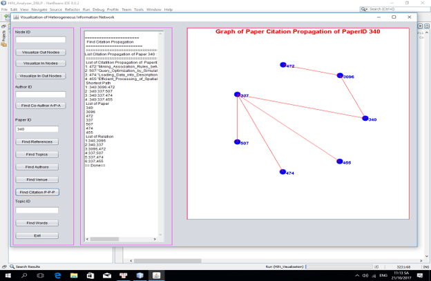
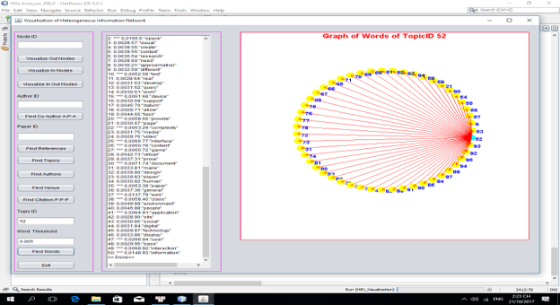
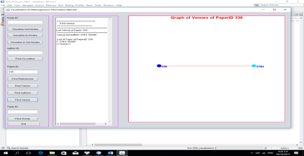
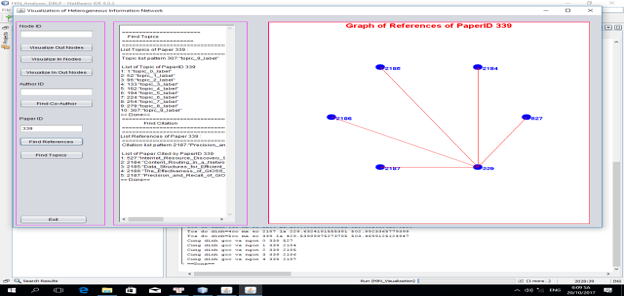
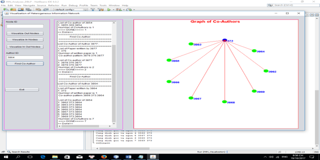
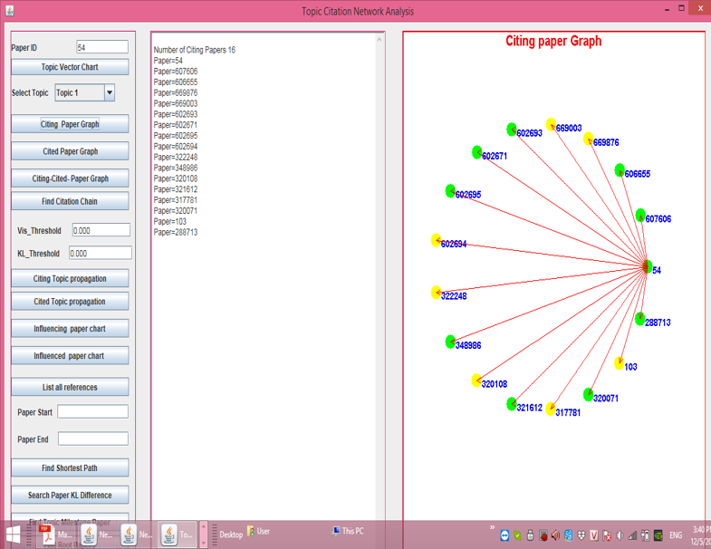
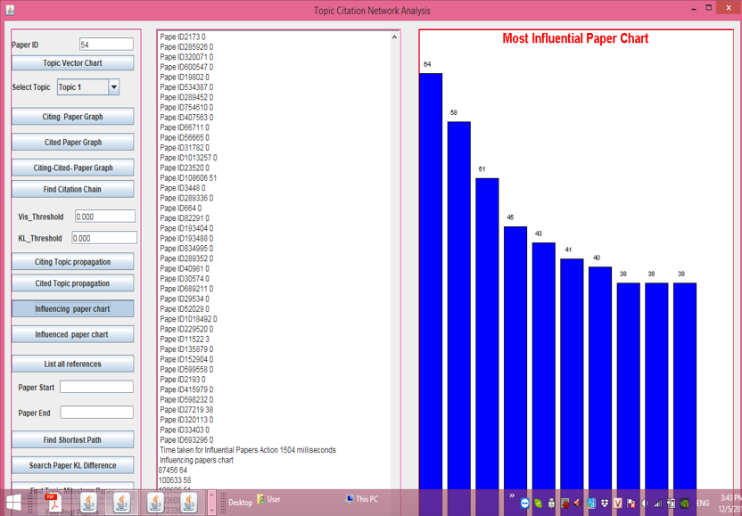

Hệ Quản Lý Thông Tin Thư Mục
Tìm Sự Tương Tự Giữa Hai Nodes Dùng Path Sim

Tìm Sự Lan Truyền Của Một Bài Báo Cụ Thể Qua P-P-P Meta Path

Tìm Các Từ Của Một Chủ Đề Cụ Thể

Tìm Địa Điểm Công Bố Của Một Paper
Tìm Tác Giả Của Một Bài Báo Cụ Thể

Tìm Tài Liệu Tham Khảo Của Một Paper Cụ Thể

Tìm Các Đồng Tác Giả Theo A-P-A Meta Path

Phân Tích Mạng Trích Dẫn Theo Chủ Đề - Citing Paper Graph
Phân Tích Mạng Trích Dẫn Theo Chủ Đề - Cited Paper Graph

Biểu Đồ Biểu Diễn Tầm Ảnh Hưởng Của Một Bài Báo
Biểu Đồ Biểu Diễn Sự Phát Triển Của Bài Báo Đã Xuất Bản